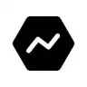
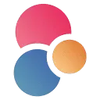
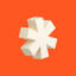

NeurosphereАгрегаторы нейросетей
В инструменте «Neurosphere» можно собирать видеосцену по описанию или визуальному исходнику. Ещё одно направление работы: получать изображения из словесного задания.
Агрегаторы нейросетей: Сравните доступные модели, отдельные лимиты и расход кредитов. Одна подписка не обязательно включает одинаковый объём работы со всеми инстру
Молекула собирает разные модели в одном рабочем интерфейсе. Начните с небольшого задания и заранее определите критерии ответа, чтобы выбирать по полезности результата для вашей задачи.
Из этого описания услуги подготовь ответ клиенту до ста слов. Сохрани ограничения по доставке и возврату. Покажи, какие сведения отсутствуют и должны быть уточнены человеком.

В инструменте «Neurosphere» можно собирать видеосцену по описанию или визуальному исходнику. Ещё одно направление работы: получать изображения из словесного задания.

Pollo AI объединяет несколько способов подготовки визуального контента. Перед генерацией нужно выбрать нужный формат и понять, какие исходные материалы принимает выбранный режим.
The AI Reports представляет каталог ИИ-приложений с обзорными материалами и оценками продуктов. Сайт собирает разборы инструментов и сводит их в сравнительное представление. Его основное назначение связано с поиском подходящего приложения через описание возможностей, обзор и предлагаемую оценку, а не с выполнением самой генеративной задачи.
Сравнивать «The GPT Repo» с другими инструментами раздела «Промты и промт-инжиниринг» удобнее на одинаковом исходном материале.
«All Things AI» представлен в разделе «Агрегаторы нейросетей». При выборе проверьте нужную операцию и условия работы с результатом.
Для «ChatHub» сначала определите свою задачу и требуемый результат. Карточка относится к направлению «Чат-боты и ассистенты».

CleeAI LKM™ предназначен для исследовательских вопросов на разные темы с участием ИИ. Помощник подготавливает ответы с использованием источников и предоставляет сведения в ходе работы. Пользователь связывает формулировку вопроса с рассмотрением полученной информации и оснований, которые представлены вместе с ответом.
Для «FutureTools.io» сначала определите свою задачу и требуемый результат. Карточка относится к направлению «Поиск информации».
«HumanizeAI.io» представлен в разделе «Агрегаторы нейросетей». При выборе проверьте нужную операцию и условия работы с результатом.
Сравнивать «KhojGPT.com» с другими инструментами раздела «Чат-боты и ассистенты» удобнее на одинаковом исходном материале.
Maroofy помогает искать композиции и получать рекомендации с похожей атмосферой. В исходном описании отмечен просмотр недавних поисков. Для проверки возьмите знакомую песню и сравните предложенные варианты по темпу, настроению и инструментам; музыкальное сходство может означать разные вещи, поэтому критерий лучше назвать заранее.
Сравнивать «ReReview AI» с другими инструментами раздела «Поиск информации» удобнее на одинаковом исходном материале.
Сравнивать «Spellprints» с другими инструментами раздела «Агрегаторы нейросетей» удобнее на одинаковом исходном материале.
Сравнивать «AI Library» с другими инструментами раздела «Агрегаторы нейросетей» удобнее на одинаковом исходном материале.
AIGPT Free предоставляет набор ИИ-инструментов для подготовки нескольких видов содержимого. Среди направлений названы тексты, изображения и отчёты. Продукт ориентирован на обращение к разным форматам в одном наборе, где письменная или визуальная задача получает собственный генеративный результат; доступность конкретных режимов следует уточнять отдельно.

AIMLAPI представляет общее подключение к моделям разных поставщиков. Оно пригодится разработчику, который хочет вызывать генерации из своего приложения через API.
Сравнивать «Cosmos AI» с другими инструментами раздела «ИИ-ассистент» удобнее на одинаковом исходном материале.
Сравнивать «Getatom» с другими инструментами раздела «Создание контента» удобнее на одинаковом исходном материале.

Hugging Face хранит модели, наборы данных и приложения Spaces. Помогает изучать условия моделей, пробовать примеры и готовить собственное окружение для машинного обучения.
ZeusGPT объединяет модели для текстовых и визуальных задач в одном веб-приложении. Также представлены музыкальные инструменты и озвучивание, дополняющие работу с изображениями и видео. Российская платформа поддерживает расчёты в рублях и предоставляет разговорный ИИ-интерфейс для обращения пользователя к доступным возможностям.
Сравнивать «AI Directories» с другими инструментами раздела «Агрегаторы нейросетей» удобнее на одинаковом исходном материале.

Eden AI предоставляет общий API для обращения к разным ИИ-движкам и технологиям. Пользователь может выбирать средства обработки в рамках единого способа подключения. В описании также представлены стратегии резервирования, которые относятся к организации рабочего процесса с доступными поставщиками.

В инструменте «MimicPC» можно собирать видеосцену по описанию или визуальному исходнику. Ещё одно направление работы: получать изображения из словесного задания.

PromptBase рассчитан на задачи, где нужно собирать видеосцену по описанию или визуальному исходнику. Ещё одно направление работы: получать изображения из словесного задания.

Replicate позволяет запускать модели через подключаемый сервис. В приложении важно правильно передать входные данные и обработать формат возвращаемого результата.
Сравнивать «There’s An AI For That» с другими инструментами раздела «Поиск информации» удобнее на одинаковом исходном материале.

В инструменте «Abacus.AI» можно готовить ответы на обращения клиентов. Ещё одно направление работы: использовать разные модели через общее рабочее пространство.
Для «AI-Hunter» сначала определите свою задачу и требуемый результат. Карточка относится к направлению «Поиск информации».

«aigclist» готовит визуальные материалы по заданию. «aigclist» готовит текстовый черновик по условиям задачи.

В инструменте «GlobalGPT» можно собирать видеосцену по описанию или визуальному исходнику. Ещё одно направление работы: получать изображения из словесного задания.
«GPT Finder» представлен в разделе «Поиск информации». При выборе проверьте нужную операцию и условия работы с результатом.
Страница 2 из 2